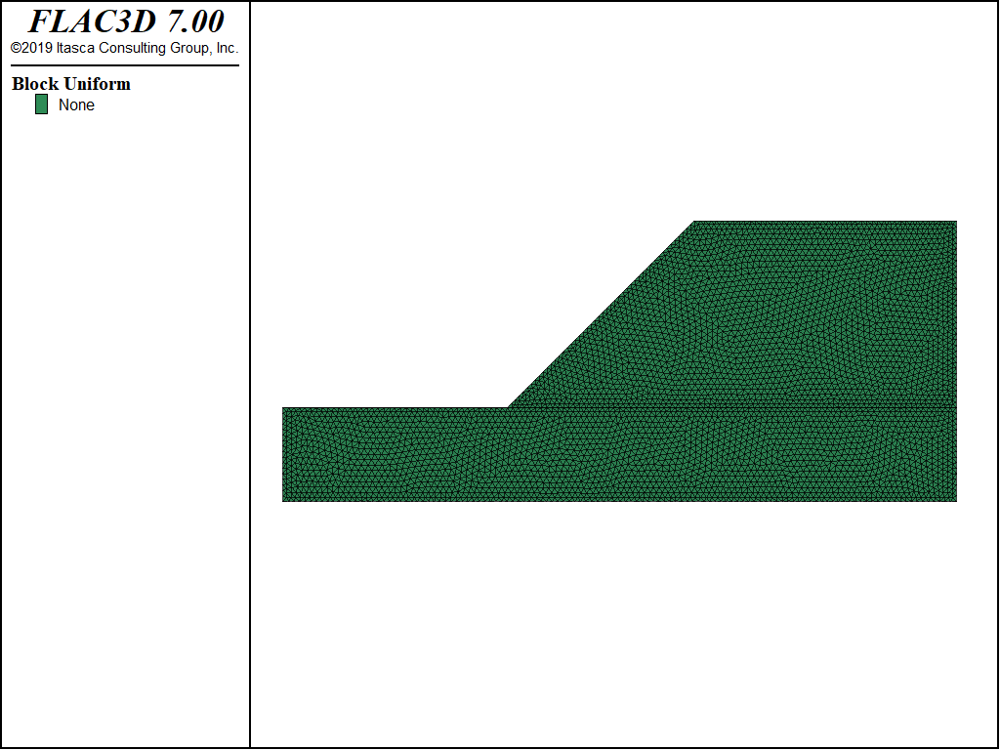
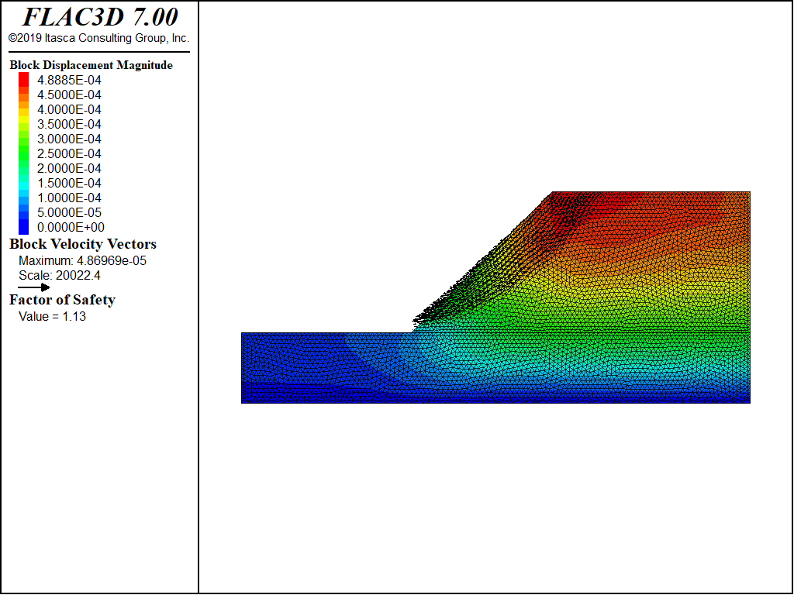

验证：霍克-布朗材料简单边坡的测试
为验证 3DEC 中使用霍克-布朗材料的安全系数计算，进行了两项验证练习。第一项检验基于抗剪强度 \(\tau\) 的强度折减计算；第二项检验基于完整岩样无侧限抗压强度的计算（见霍克-布朗材料（Hoek-Brown Material））。
基于抗剪强度的安全系数
针对一个简单的边坡几何形状，计算基于霍克-布朗抗剪强度的安全系数，并与 Hammah 等（2005）报道的、采用其他方法计算霍克-布朗材料安全系数的结果（即广义霍克-布朗法、等效莫尔-库仑法，以及 Bishop 和 Spencer 极限平衡法）进行比较。用于该对比计算的岩质边坡倾角为 45°，高度为 10 m。岩石采用具有以下属性的霍克-布朗材料表示：
| \(E\) | = | 5000 MPa |
| \(\nu\) | = | 0.3 |
| \(\rho\) | = | 2500 kg/m3 |
| \(m_b\) | = | 0.067 |
| \(s\) | = | 0.000025 |
| \(a\) | = | 0.619 |
| \(\sigma_ci\) | = | 30 MPa |
该测试所用的 3DEC 模型网格见下方 图 1（Figure 1）。模型在坡脚处含有一条水平施工缝，以便于网格划分。最大网格单元宽度设为 0.3 m。
默认情况下，当对采用 zone model mhoekbrown 的 3DEC 模型执行 solve fos 时，安全系数计算针对霍克-布朗材料的抗剪强度进行。本次测试计算得到的安全系数为 1.16。破坏面如 图 2（Figure 2） 中的位移大小等值线图所示。该结果与 Hammah 等（2005）报道的结果吻合良好。表 2（Table 2） 汇总了本次测试所报道的安全系数。


图 1：边坡模型网格。


图 2：霍克-布朗材料简单边坡计算得到的安全系数与破坏面。
| 方法 | 安全系数 |
|---|---|
| 相对于抗剪强度的 zone model mhoekbrown | 1.16 |
| 广义霍克-布朗强度折减法* | 1.15 |
| 等效莫尔-库仑强度折减法* | 1.15 |
| Bishop 简化极限平衡法* | 1.153 |
| Spencer 极限平衡法* | 1.152 |
*引自 Hammah 等（2005）
数据文件
| 这些内容对您有帮助吗？… | FLAC3D © 2019, Itasca | 原文更新于 2020 年 10 月 8 日 |
| 版权与免责声明 | ||